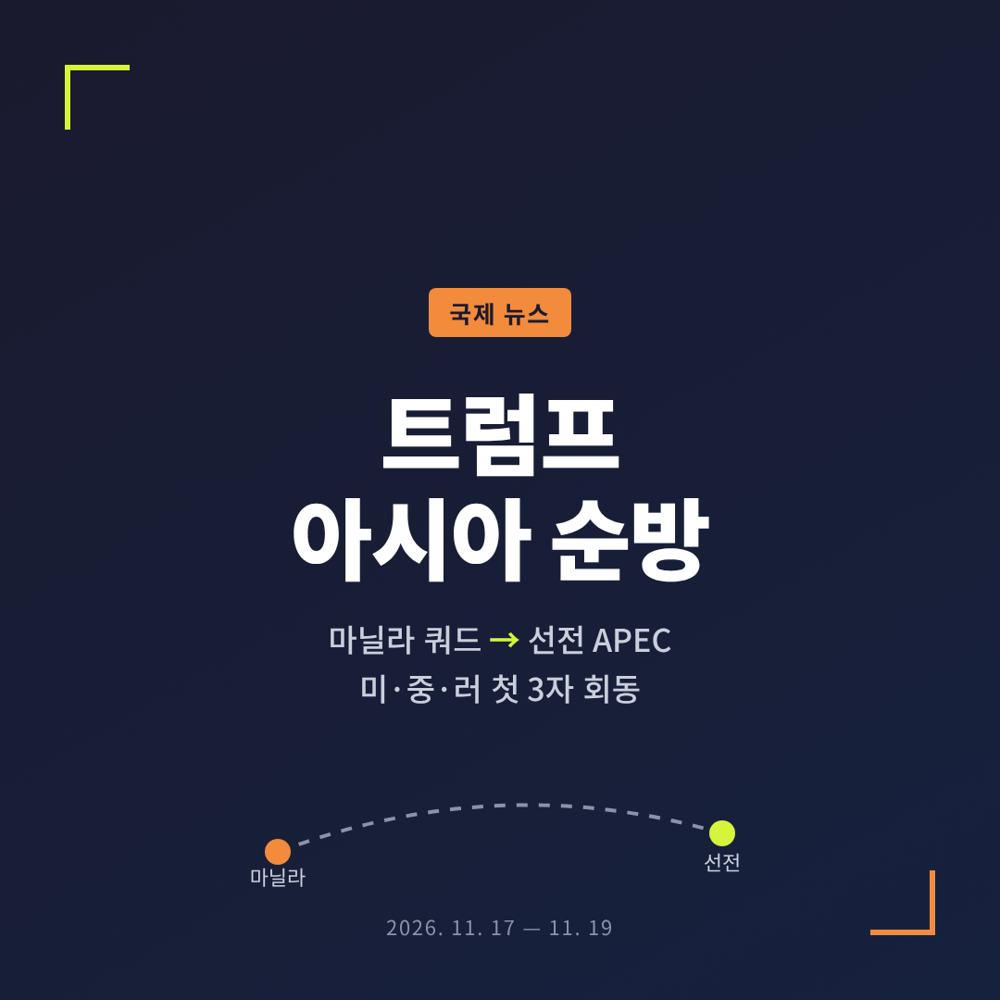
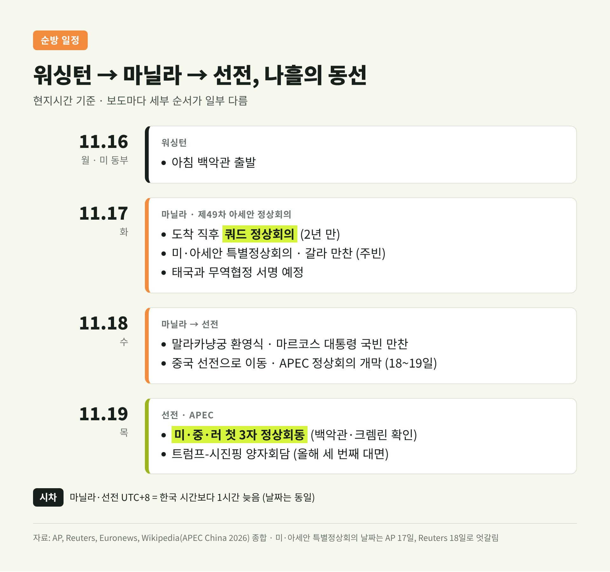
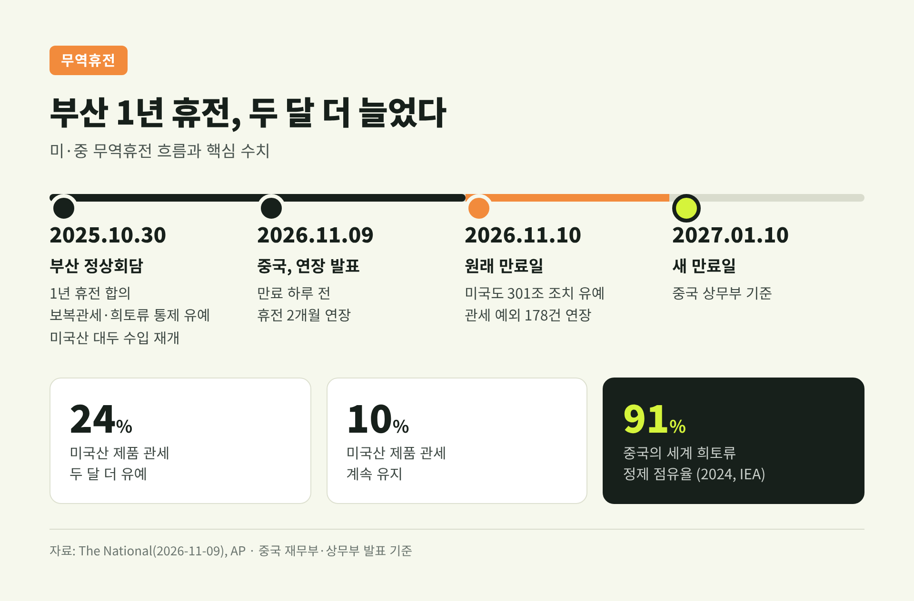
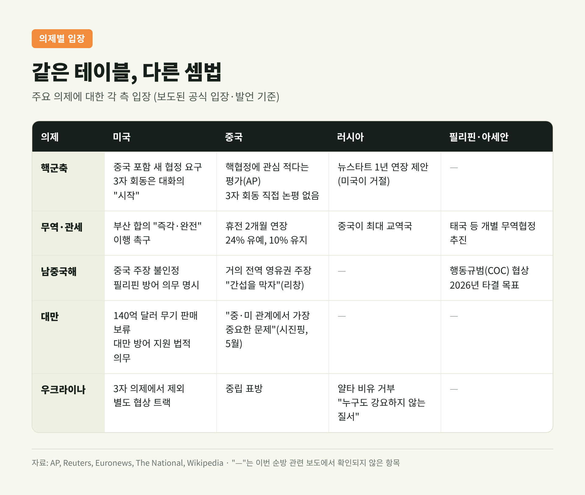
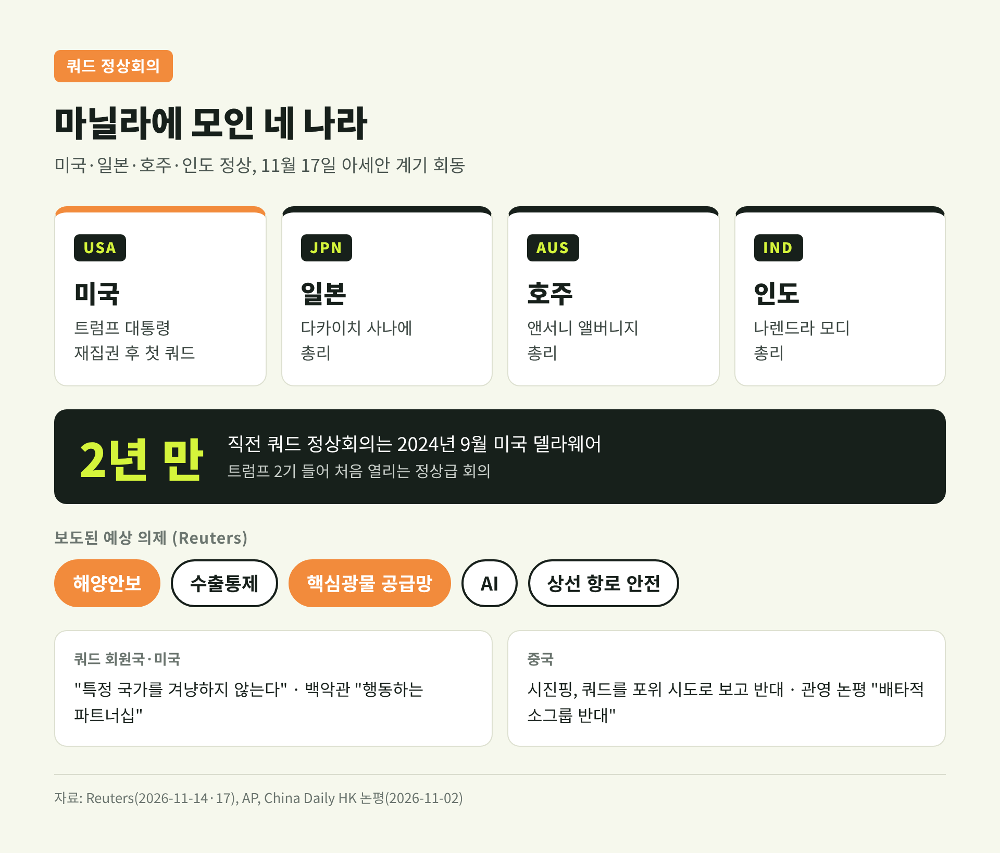
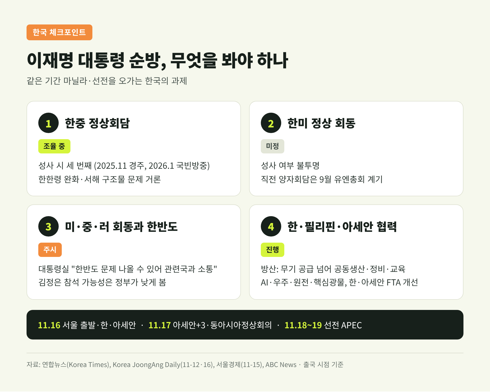

트럼프 아시아 순방 시작, 마닐라 쿼드 거쳐 선전서 시진핑·푸틴 만난다
이번 글에서는 11월 17일 시작된 트럼프 미국 대통령의 아시아 순방을 정리해 보겠습니다. 일정이 어떻게 짜였는지, 각국이 무엇을 얻으려 하는지, 한국에는 어떤 의미가 있는지를 차례로 살핍니다.
- 트럼프 대통령이 17일 마닐라에 도착해 쿼드(미·일·호·인) 정상회의와 아세안 일정을 소화하고, 18~19일 중국 선전 APEC으로 향합니다.
- 19일(목)에는 미·중·러 정상이 처음으로 한자리에 모입니다. 핵군축과 이란 전쟁이 의제이고, 우크라이나는 제외됐다고 백악관은 밝혔습니다.
- 같은 기간 순방 중인 이재명 대통령은 한중 정상회담을 조율하고 있지만, 한미 정상 회동은 아직 불투명합니다.

■ 무슨 일이 있었나 — 마닐라에서 선전까지
트럼프 대통령은 16일(미 동부시간) 아침 백악관을 떠나 17일 마닐라에 도착했습니다. AP는 이번 마닐라 방문을 3일짜리 순방의 첫 기착지로 소개했습니다. 공화당이 중간선거에서 패한 뒤 처음 나서는 해외 일정이기도 합니다.
첫날 일정은 빽빽합니다. 도착 직후 쿼드 정상회의가 열립니다. 이어 아세안 정상들과의 특별정상회의, 트럼프가 주빈으로 초대된 갈라 만찬이 이어집니다. 만찬 뒤에는 태국과의 무역협정 서명도 예정돼 있습니다.
둘째 날인 18일에는 마르코스 필리핀 대통령이 말라카냥궁에서 의장대 환영식과 국빈 만찬을 엽니다. 그다음 행선지는 중국 광둥성 선전입니다. 선전 APEC 정상회의는 18~19일 열리고, 미·중·러 3자 회동은 19일(목)로 잡혔습니다. 백악관이 14일, 크렘린이 15일 각각 이 일정을 확인했습니다.
한 가지 짚어 둘 점이 있습니다. 마닐라와 선전은 모두 한국보다 1시간 늦습니다. 날짜는 한국과 같으니, 뉴스에 나오는 요일을 그대로 읽으셔도 됩니다.

다만 세부 일정은 보도마다 조금씩 다릅니다. AP는 미·아세안 특별정상회의를 17일로 적었고, 로이터는 마르코스 회담과 같은 18일로 전했습니다. 아세안 정상회의 기간도 16~18일과 15~18일로 엇갈립니다. 현지 일정이 막판까지 조정된 것으로 보입니다.
■ 왜 중요한가 — 한 주에 세 개의 판이 겹친다
이번 순방이 주목받는 이유는 성격이 다른 세 무대가 한 주에 겹치기 때문입니다.
첫째는 쿼드입니다. 트럼프 재집권 후 첫 쿼드 정상회의이고, 2024년 9월 미국 델라웨어 회의 이후 2년 만입니다. 다카이치 일본 총리, 앨버니지 호주 총리, 모디 인도 총리가 마닐라에 모입니다. 로이터에 따르면 해양안보, 수출통제, 핵심광물 공급망 다변화, AI가 의제로 거론됩니다.
둘째는 미·중 정상회담입니다. 5월 베이징 국빈방문, 9월 시진핑 주석의 워싱턴 국빈방문에 이어 올해만 세 번째 대면입니다. 무역휴전과 희토류, 대만 문제가 함께 테이블에 오릅니다.
셋째가 가장 이례적입니다. 미·중·러 정상이 처음으로 3자 형식으로 만납니다. 백악관 올리비아 웨일스 대변인은 트럼프가 "세계 핵무기 감축"을 논의할 것이라고 밝혔습니다.
동맹을 모으는 회의와 경쟁국을 만나는 회의를 같은 주에 잇달아 여는 셈입니다. 커트 캠벨 전 국무부 부장관은 쿼드 회의를 두고 3자 회동에 앞서 보낼 수 있는 "가장 좋은 신호"라고 평했습니다.
■ 쟁점 ① 무역휴전과 관세 — 연장은 됐지만 시한은 짧다
미·중 무역휴전의 출발점은 2025년 10월 30일 부산 정상회담입니다. 당시 두 나라는 1년 휴전에 합의했습니다. 보복관세를 서로 미루고, 중국은 희토류 수출통제를 유예하고 미국산 대두 수입을 재개하기로 했습니다.
그 1년이 11월 10일로 끝날 예정이었습니다. 중국은 만료 직전 휴전을 두 달 연장했습니다. 중국 상무부 기준 새 시한은 2027년 1월 10일입니다. 미국산 제품에 대한 24% 관세는 계속 유예하되, 10% 관세는 유지합니다. 미국도 무역대표부(USTR)를 통해 중국 해운·물류 분야 301조 조치를 미루고, 기존 관세 예외 178건을 연장했습니다.

양측의 온도 차는 여전합니다. 베선트 재무장관은 허리펑 부총리에게 부산 합의를 "즉각적이고 완전하게" 이행하라고 촉구했습니다. 그리어 USTR 대표도 농산물과 희토류, 핵심광물 이행을 강조했습니다. 한 전직 고위 당국자는 "중국이 약속은 많이 하고 이행은 덜 했다"고 말했습니다.
중국이 쥔 카드는 분명합니다. 국제에너지기구(IEA)에 따르면 중국은 2024년 자석용 희토류 채굴의 60%, 정제의 91%를 차지했습니다. 미국외교협회(CFR)는 백악관이 이번 회담에서 무역·희토류 휴전 연장과 원칙 합의된 'AI 핫라인' 구체화를 노린다고 분석했습니다.
■ 쟁점 ② 남중국해와 필리핀 — 동맹국의 안방에서
필리핀은 미국의 조약 동맹국이자 올해 아세안 의장국입니다. 남중국해 문제를 두고 각국 입장은 평행선입니다.
- 중국: 남중국해 거의 전역에 대해 영유권을 주장합니다.
- 미국: 그 주장을 인정하지 않습니다. 필리핀군이 남중국해를 포함해 무력공격을 받으면 방어할 의무가 있다는 입장입니다.
- 아세안: 중국과 '행동규범(COC)'을 협상 중입니다. 2023년 외교장관들이 2026년 타결을 목표로 정했습니다. 다만 이번 회의에서 마무리되기는 어렵다는 전망과 타결을 기대하는 목소리가 함께 나옵니다.
중국 측 메시지도 분명했습니다. 리창 총리는 16일 아세안 회의에서 중·아세안 경제 성과를 "참으로 비범하다"고 평가했습니다. 그러면서 "단결해 간섭을 막고 함께 일하자"고 말했습니다. 중국은 아세안의 최대 교역국입니다.
필리핀 내부의 시선도 하나가 아닙니다. 트럼프 도착 전 마닐라에서는 약 1,500명이 반대 집회를 열었습니다. 시위를 이끈 테디 카시뇨는 마르코스 정부가 "트럼프의 꼭두각시 노릇을 그만둬야 한다"고 주장했습니다. 반면 호세 마누엘 로무알데스 주미 필리핀대사는 트럼프에게 "개인적 관계가 매우 중요하다"며 정상 간 유대를 강조했습니다.
CFR의 조슈아 컬란치크 선임연구원은 마르코스 대통령이 바라는 안보 보장 강화나 대외군사금융 확대를 이번에 얻기는 어려울 것이라고 전망했습니다.
■ 쟁점 ③ 미·중·러 3자 회동 — 핵군축, 이란, 그리고 빠진 우크라이나
3자 회동의 명분은 핵군축입니다. 미·러 사이 마지막 핵군축 조약이던 뉴스타트(New START)는 올해 2월 만료됐습니다. AP는 두 나라 핵무기에 상한이 사라진 것이 50여 년 만이라고 전했습니다. 트럼프는 러시아의 1년 연장 제안을 거절하고 중국까지 포함한 새 협정을 요구해 왔습니다. 펜타곤은 중국 핵탄두를 600기 이상, 미·러는 각각 5,000기 이상으로 추정합니다.
미 고위 당국자는 이번 만남을 핵군축 대화의 "시작"이라고 표현했습니다. 합의 발표는 기대하지 않는다고 선을 그었습니다. 중국은 그동안 핵협정에 큰 관심을 보이지 않았습니다.
두 번째 의제는 미국이 치르고 있는 이란 전쟁입니다. 이 전쟁을 두고 트럼프와 시진핑의 입장은 다르고, 러시아는 이란과 군사·정보 협력을 넓혀 왔습니다.
우크라이나는 빠졌습니다. 미 고위 당국자는 별도 협상 트랙이 있고 "중국은 그 트랙에 속하지 않아" 다루는 것이 적절치 않다고 설명했습니다. 젤렌스키 우크라이나 대통령은 키이우가 빠진 채 우크라이나 문제가 거론될 가능성을 우려했습니다. 일부에서는 1945년 얄타회담에 빗대기도 했습니다.

러시아와 중국의 반응은 결이 다릅니다. 드미트리 페스코프 크렘린 대변인은 얄타 비유를 일축했습니다. 선전에서의 합의를 다른 나라에 강요할 수 없다며 "누구도 특정한 시각을 강요하지 않는 것"이 세계 질서에 대한 러시아의 구상이라고 말했습니다. 중국은 3자 회동에 직접 논평하지 않았습니다. 마오닝 외교부 대변인은 APEC에서 AI·무역·디지털경제 분야의 "더 실질적인 성과"를 기대한다고만 밝혔습니다.
■ 쟁점 ④ 대만과 쿼드 — 조용하지만 무거운 의제
대만은 이번에 앞자리에 서지 않을 수 있다는 관측이 나옵니다. AP에 따르면 140억 달러 규모 대만 무기 판매 패키지는 보류 상태입니다. 2025년 말 승인된 110억 달러 패키지는 진행 중입니다. 대만 학자 아서 왕은 "트럼프 행정부에게 이것은 미·중 간 핵심 쟁점이 아니다"라고 말했습니다.
중국의 입장은 일관됩니다. 시진핑 주석은 5월 베이징에서 대만 문제를 "중·미 관계에서 가장 중요한 문제"라고 했고, 잘못 다루면 "충돌, 심지어 갈등"이 생길 수 있다고 경고했습니다. 대만은 'Chinese Taipei' 이름으로 APEC에 참석하며, 스탠 시 에이서 명예회장이 대표로 나섭니다.
쿼드를 보는 시각도 엇갈립니다. 쿼드 회원국은 특정 국가를 겨냥하지 않는다고 말합니다. 루비오 국무장관도 쿼드가 "반중 연합이 아니다"라고 했습니다. 반면 시진핑 주석은 쿼드를 중국 포위 시도로 보고 반대해 왔습니다. 중국 관영 차이나데일리는 논평에서 "배타적 소그룹과 진영 대결"에 반대한다고 밝혔습니다.

■ 한국에 주는 함의 — 테이블 밖에서 챙겨야 할 것들
이재명 대통령도 같은 동선 위에 있습니다. 16일 서울공항을 출발해 마닐라에서 한·아세안, 한·메콩 정상회의를 치렀습니다. 태국·필리핀 정상과 양자회담도 가졌습니다. 17일에는 아세안+3와 동아시아정상회의에 참석하고, 18~19일 선전 APEC으로 이동합니다.
가장 큰 관심사는 한중 정상회담입니다. 서울경제는 대통령실이 세부 사항을 조율 중이라고 보도했습니다. 성사되면 2025년 11월 경주, 2026년 1월 국빈방중에 이어 세 번째입니다. 다만 연합뉴스와 중앙일보 영문판은 출국 시점까지 확정된 양자회담이 없다고 전했습니다. 한한령 완화와 서해 구조물 문제가 다뤄질 가능성이 거론됩니다. 시진핑 주석은 1월 "석 자 두께의 얼음은 하루에 녹지 않는다"고 말한 바 있습니다.
한미 정상 회동은 불투명합니다. 두 정상의 직전 양자회담은 9월 유엔총회 때였습니다.

더 미묘한 지점은 미·중·러 3자 회동입니다. 대통령실 고위 관계자는 세 정상의 논의에서 한반도 문제가 나올 수 있어 관련국과 소통하고 있다고 밝혔습니다. 한국이 한반도 문제에서 소외될 수 있다는 우려도 나옵니다. 트럼프는 김정은 국무위원장에 대해 "올 수도 있다. 시 주석에게 달렸다"고 했지만, 우리 정부는 참석 가능성을 낮게 봅니다.
예전에는 한국이 APEC을 주최하며 의제를 이끄는 쪽이었습니다. 지금은 미·중·러 세 정상이 마주 앉는 테이블 바깥에서 한반도 의제를 챙겨야 하는 처지입니다.
한편 실익을 넓히려는 움직임도 있습니다. 이 대통령은 필리핀과 방산 협력을 "단순한 무기 공급을 넘어" 기술협력·공동생산·정비로 넓히자고 제안했습니다. AI·우주·원전·핵심광물로 협력 분야를 확대하고, 한·아세안 FTA 업그레이드도 추진합니다.
■ 앞으로의 전망 — 상징과 실익 사이
이번 순방의 성과를 가늠할 지점은 크게 네 가지입니다.
- 무역휴전의 다음 시한 — 2027년 1월 10일 이후를 내다보는 추가 연장이나 희토류 관련 합의가 나올지가 관건입니다.
- 3자 회동의 형식과 메시지 — 미 당국자 스스로 합의를 기대하지 않는다고 밝힌 만큼, 공동 메시지가 나오는지 자체가 관전 포인트입니다. AP는 분석가들을 인용해 실질보다 상징이 클 것이라고 전했습니다.
- 대만 무기 판매 — CFR은 140억 달러 패키지에 대한 의회의 초당적 지지가 강하다는 점, 시진핑 주석이 '대만 독립 반대'를 더 분명히 말하라고 요구할 수 있다는 점을 짚었습니다.
- 쿼드의 후속 조치 — 2년 만의 정상회의가 핵심광물·해양안보 분야에서 구체적 결과로 이어질지 지켜볼 일입니다.
한계도 분명합니다. CFR은 이번 순방을 두고 "계획은 크지만 전망은 빈약하다"고 평가했습니다. 반면 AP가 인용한 분석가들은 시진핑 주석이 3자 회동을 중국의 커진 영향력을 보여줄 기회로 볼 수 있다고 짚었습니다. 같은 자리를 두고도 각국이 기대하는 바가 다른 셈입니다. 어느 쪽 계산이 맞아떨어질지는 19일 이후 나올 발표문이 보여줄 것입니다.
정리하면 이렇습니다. 이번 한 주 동안 동맹과의 결속, 경쟁국과의 거래, 강대국 간 직접 대화가 한꺼번에 시험대에 오릅니다.
결국 남는 질문은 하나입니다 — 강대국들이 마주 앉은 자리에서, 그 바깥의 나라들은 무엇을 지켜낼 수 있을까요.
한국이 그 답을 찾을 수 있겠냐고 물으신다면, 이번 주 선전에서의 조용한 외교가 그 첫 시험이라고 답하겠습니다.
출처
- Reuters via Yahoo News, "Trump to kick off Asia trip with Quad talks in Manila ahead of China visit" (2026-11-17) — https://www.yahoo.com/news/politics/articles/trump-kick-off-asia-trip-012604135.html
- AP via NBC Miami, "Trump arrives in Philippines to kick off Asia trip with economic deals, Asia-Pacific allies talks" (2026-11-17) — https://www.nbcmiami.com/news/national-international/trump-asia-trip-philippines/3889093/
- AP via KSAT, "Trump is to arrive in the Philippines to talk trade and seek respite from troubles at home" (2026-11-17) — https://www.ksat.com/news/world/2026/11/17/trump-is-to-arrive-in-the-philippines-to-talk-trade-and-seek-respite-from-troubles-at-home/
- AP via WCAX, "Trump, Xi and Putin plan an unprecedented joint meeting, White House says" (2026-11-14) — https://www.wcax.com/2026/11/14/trump-xi-putin-plan-an-unprecedented-joint-meeting-white-house-says/
- AP via WSLS, "Taiwan may take a backseat when Xi and Trump meet for a third time at an APEC summit" (2026-11-17) — https://www.wsls.com/news/world/2026/11/17/taiwan-may-take-a-backseat-when-xi-and-trump-meet-for-a-third-time-at-an-apec-summit/
- Euronews, "Trump, Xi and Putin to meet in China, White House says" (2026-11-14) — https://euronews.com/2026/11/14/trump-xi-and-putin-to-meet-in-china-white-house-says
- ABC News, "Trump Asia trip live updates" (2026-11-16) — https://abcnews.com/Politics/live-updates/trump-asia-trip-2026/?id=138187702
- Reuters via Khaleej Times, "Trump, other Quad leaders to meet in Manila on Nov 17, sources say" (2026-11-14) — https://www.khaleejtimes.com/world/asia/trump-quad-leaders-meet-manila-nov-17-2026
- The National, "China extends pause on rare earth export curbs for two months" (2026-11-09) — https://www.thenationalnews.com/news/us/2026/11/09/china-extends-pause-on-rare-earth-export-curbs-for-two-months/
- Council on Foreign Relations, "Trump Heads to the ASEAN and APEC Summits With Big Plans and Slim Prospects" (2026-11-15) — https://www.cfr.org/articles/trump-heads-to-the-asean-and-apec-summits-with-big-plans-and-slim-prospects
- Wikipedia, "APEC China 2026" — https://en.wikipedia.org/wiki/APEC_China_2026
- Wikipedia, "2026 state visit by Donald Trump to China" — https://en.wikipedia.org/wiki/2026_state_visit_by_Donald_Trump_to_China
- Korea JoongAng Daily, "South Korea's Lee begins Philippines, China trip for Asean and APEC summits" (2026-11-16) — https://www.koreajoongangdaily.com/korea/lee-embarks-on-fourday-trip-to-philippines-china-for-asean-apec-summits/12973943
- Korea JoongAng Daily, "South Korea's Lee Jae Myung to attend ASEAN meetings and APEC summit in China" (2026-11-12) — https://www.koreajoongangdaily.com/korea/lee-set-to-attend-asean-apec-summits-as-north-korea-diplomacy-speculation-intensifies/12968994
- 연합뉴스 via The Korea Times, "Lee set to depart for ASEAN, APEC summits in Manila, Shenzhen" (2026-11-16) — https://www.koreatimes.co.kr/southkorea/politics/20261116/lee-set-to-depart-for-asean-apec-summits-in-manila-shenzhen
- 서울경제 영문판, "Lee Seeks Third Summit With Xi as Culture Ban Thaw Looms" (2026-11-15) — https://en.sedaily.com/politics/2026/11/15/lee-seeks-third-summit-with-xi-as-culture-ban-thaw-looms
- China Daily HK(논평), "Quad statement reeks of sheer hypocrisy" (2026-11-02) — https://www.chinadailyhk.com/article/642096